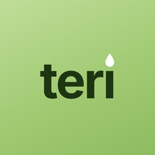

Некоторые фотографии товаров в Teri сделаны не магазином. Мы обрезали их до квадрата и уменьшили. Товарные знаки принадлежат их владельцам.
Лицензия Unsplash: unsplash.com/license.
Фото участников проекта Open Beauty Facts, лицензия Creative Commons Attribution-ShareAlike 3.0. Наши обрезанные версии распространяются на тех же условиях.
Если вы автор фотографии и хотите, чтобы мы её убрали или подписали иначе, напишите на dev.dizim.nurasyl@gmail.com.
Some product photos in Teri were not taken by the shop. We cropped them to squares and made them smaller; the two Unsplash photos are used under the Unsplash License, the Open Beauty Facts photos under CC BY-SA 3.0 (our cropped versions under the same licence). Trademarks belong to their owners. To have a photo removed or credited differently, write to dev.dizim.nurasyl@gmail.com.